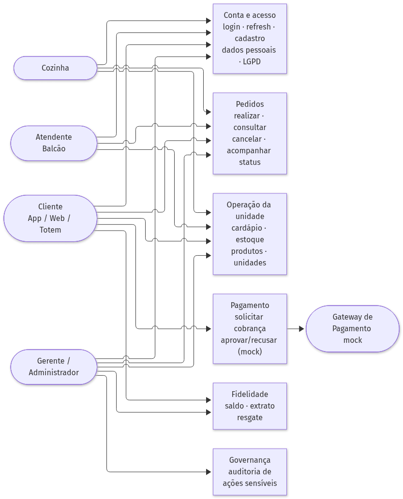
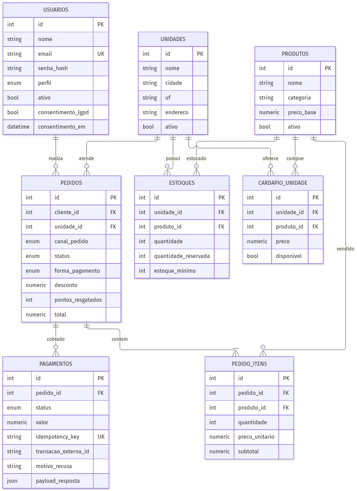
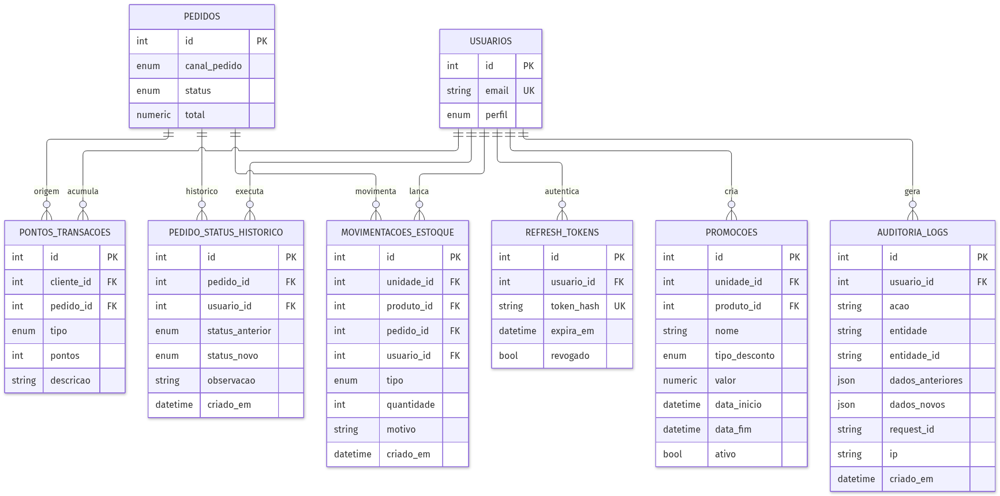
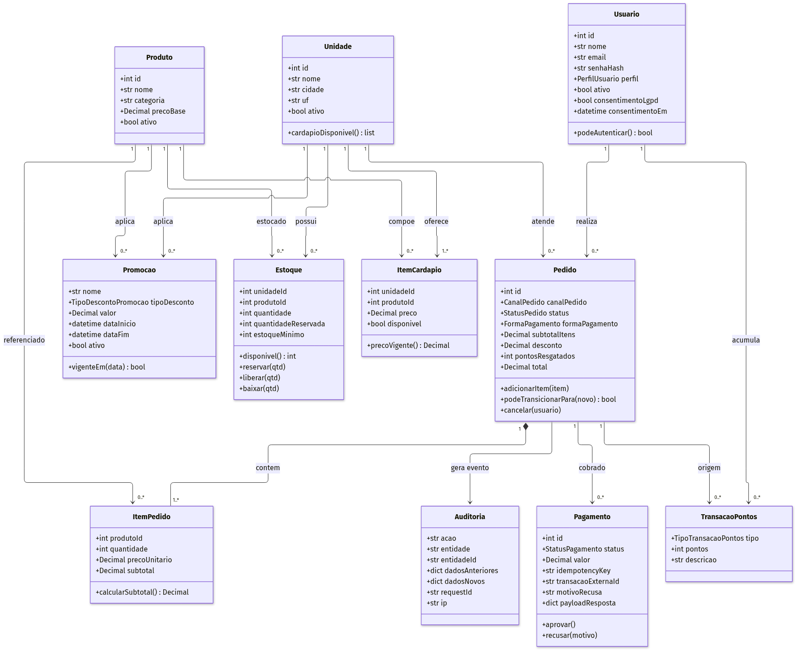
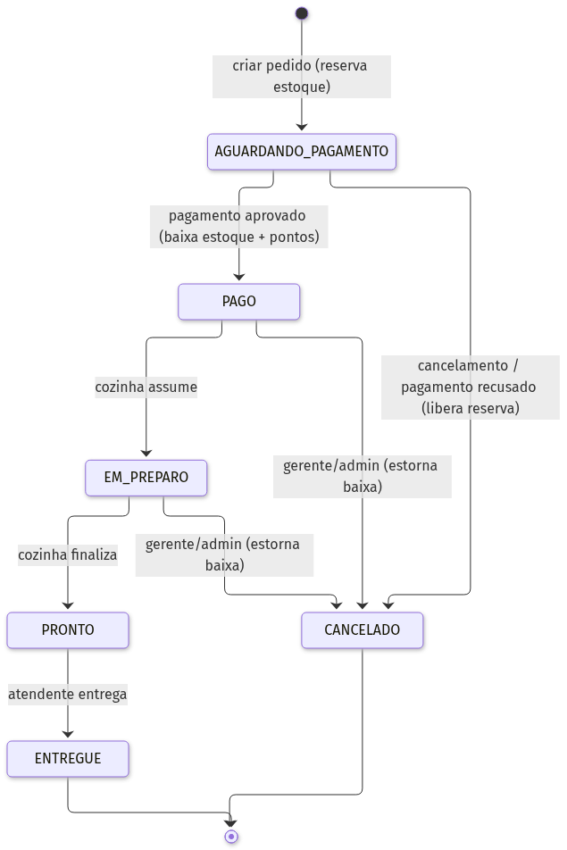
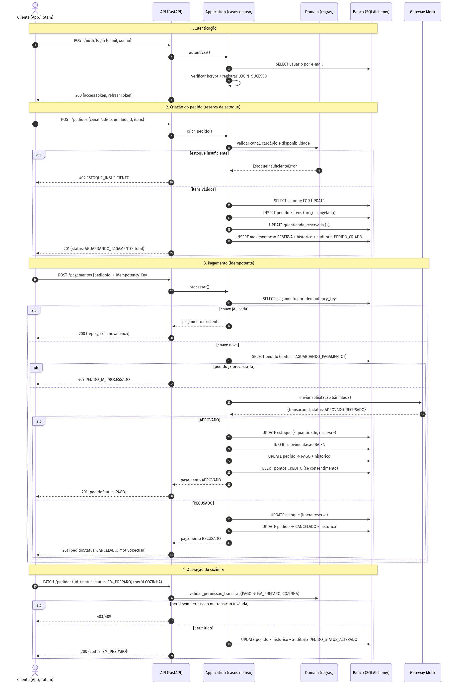
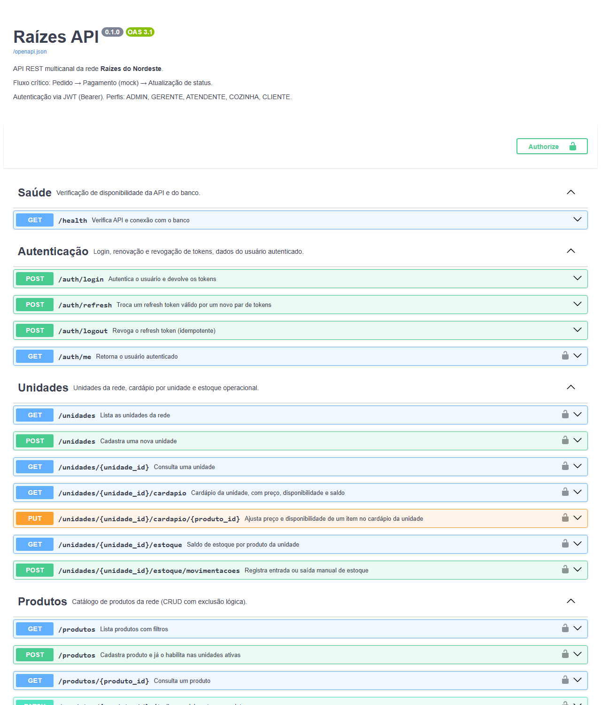

CENTRO UNIVERSITÁRIO INTERNACIONAL UNINTER
AGATHA SANTANA SOUZA
RU: 4992316
JACAREÍ – SÃO PAULO
2026
AGATHA SANTANA SOUZA
RU: 4992316
Trabalho apresentado como requisito parcial da disciplina Projeto Multidisciplinar – Eletiva IV (Trilha Back-End), do CENTRO UNIVERSITÁRIO INTERNACIONAL UNINTER, para fins de avaliação da Atividade Prática.
Professor(a) responsável: Prof. Me. Luciane Yanase Kanashiro
JACAREÍ – SÃO PAULO
2026
Este trabalho apresenta o projeto e a implementação do back-end de uma solução multicanal para a rede de lanchonetes fictícia Raízes do Nordeste. O problema de negócio é a operação de uma franquia em expansão, que precisa atender o mesmo pedido por canais distintos — aplicativo, totem, balcão, pick-up e web — mantendo cardápio e estoque próprios de cada unidade e sem perder rastreabilidade.
A solução foi construída em Python 3.12 com FastAPI, persistência em SQLAlchemy 2.0 com migrações versionadas em Alembic, autenticação JWT com autorização por perfis, documentação OpenAPI gerada a partir do código e banco SQLite portável para PostgreSQL por configuração. A organização segue quatro camadas — Domain, Application, Infrastructure e API — com regras de negócio isoladas de framework e de banco de dados.
O fluxo crítico entregue ponta a ponta é Pedido → Pagamento (mock) → Atualização de status:
o pedido registra obrigatoriamente o canal de origem (canalPedido), reserva o estoque da unidade,
tem o pagamento solicitado a um gateway simulado com chave de idempotência, e só então converte a
reserva em baixa física, credita pontos de fidelidade e avança na máquina de estados. A recusa de
pagamento libera a reserva e encerra o pedido de forma coerente.
Foram implementadas 34 operações de API em 14 tabelas, com padrão único de erro, paginação em todas as listagens e mensagens de validação em português. A LGPD é tratada de forma técnica: consentimento registrado com data, minimização nas respostas, hash bcrypt de senha, log append-only de ações sensíveis, portabilidade dos dados do titular e anonimização na exclusão da conta. A validação é reproduzível por meio de uma coleção Postman com 59 requisições e 25 cenários documentados (8 positivos e 17 negativos), executada integralmente com sucesso em banco recém-semeado.
Palavras-chave: API REST; FastAPI; multicanalidade; estoque por unidade; pagamento simulado; LGPD.
A Raízes do Nordeste é uma rede de lanchonetes de comida regional em expansão, com unidades em capitais e no interior. O crescimento trouxe um problema típico de franquia: cada loja tem disponibilidade própria de produtos e estoque próprio, mas o cliente espera a mesma experiência independentemente de onde pede. Além disso, o mesmo pedido pode nascer em canais diferentes — o aplicativo, o totem da loja, o balcão, o pick-up ou o site — e a operação precisa saber de onde ele veio para conseguir consolidar demanda por canal.
O objetivo deste trabalho é projetar e implementar o back-end dessa solução, demonstrando domínio sobre levantamento e priorização de requisitos, modelagem de dados, definição de contratos de API, implementação de regras de negócio, segurança, conformidade com a LGPD e testabilidade.
Os objetivos específicos são:
O escopo escolhido — Fluxo A: Pedido → Pagamento mock → Atualização de status — é o recomendado pelo roteiro e é o que exercita o maior número de regras simultâneas: multicanalidade, consistência de estoque, idempotência, máquina de estados, autorização por perfil e fidelização.
A rede opera com uma matriz (que define catálogo, preços de referência e campanhas) e unidades (que vendem, preparam e entregam). Disso decorrem três restrições estruturais que guiaram todo o modelo:
| ID | Requisito funcional | Situação |
|---|---|---|
| RF01 | Cadastro de usuário com e-mail único e consentimento LGPD | Implementado |
| RF02 | Autenticação por e-mail e senha com emissão de token JWT e refresh rotativo | Implementado |
| RF03 | Autorização por perfis: ADMIN, GERENTE, ATENDENTE, COZINHA, CLIENTE | Implementado |
| RF04 | Cadastro e consulta de unidades da rede | Implementado |
| RF05 | CRUD de produtos com desativação lógica | Implementado |
| RF06 | Cardápio por unidade, com preço e disponibilidade próprios | Implementado |
| RF07 | Controle de estoque por unidade, com entrada/saída e restrição de venda | Implementado |
| RF08 | Criação de pedido multicanal com itens, valores e status inicial | Implementado |
| RF09 | Registro obrigatório do canal do pedido (canalPedido) e filtro por canal |
Implementado |
| RF10 | Atualização de status com máquina de estados e permissão por perfil | Implementado |
| RF11 | Cancelamento de pedido com devolução de reserva/estoque | Implementado |
| RF12 | Solicitação de pagamento a serviço externo simulado (mock) com registro de retorno | Implementado |
| RF13 | Programa de fidelização: acúmulo, saldo, extrato e resgate | Implementado |
| RF14 | Promoções e campanhas | Modelado e documentado (regra de aplicação não aplicada ao total) |
| RF15 | Portabilidade e eliminação de dados pessoais pelo titular | Implementado |
| RF16 | Consulta de log de auditoria por administrador | Implementado |
| ID | Requisito não funcional | Como foi atendido |
|---|---|---|
| RNF01 | Segurança de credenciais | senha com bcrypt; hash nunca retorna em resposta |
| RNF02 | Autenticação e autorização | JWT HS256 de curta duração; refresh token rotativo persistido só como hash |
| RNF03 | Privacidade (LGPD) | consentimento com carimbo de tempo, minimização, mascaramento de e-mail em log de falha |
| RNF04 | Rastreabilidade | requestId por requisição (header e log), IP e trilha de status do pedido |
| RNF05 | Consistência sob concorrência | reserva de estoque com SELECT ... FOR UPDATE e transação curta |
| RNF06 | Tolerância a falhas na integração | pagamento com Idempotency-Key: retry não duplica baixa nem pontos |
| RNF07 | Disponibilidade / desempenho | SQLite em modo WAL; consultas paginadas; ausência de N+1 nas listagens de pedido |
| RNF08 | Portabilidade de banco | enums como VARCHAR com CHECK; DATABASE_URL troca SQLite por PostgreSQL |
| RNF09 | Documentação executável | OpenAPI gerado do código, sem contrato paralelo sujeito a divergência |
| RNF10 | Testabilidade | coleção Postman com asserções e plano de testes com cenários positivos e negativos |
O canal não é um parâmetro de rastreio opcional: é parte do pedido. A implementação trata os três pontos exigidos pelo roteiro:
canal_pedido é um ENUM com APP, TOTEM, BALCAO, PICKUP
e WEB, persistido como VARCHAR com CHECK, e obrigatório na criação.422 DADOS_INVALIDOS com
details[].field = "canalPedido"; valor fora do enum retorna 422 listando as opções válidas.GET /pedidos?canalPedido=TOTEM filtra a listagem, e o campo é
auditado na criação (PEDIDO_CRIADO guarda o canal no payload do log).O roteiro pede priorização explícita entre o que foi implementado e o que ficou proposto. A decisão foi guiada por um critério: o que fecha o fluxo crítico de forma verificável.
| Frente | Decisão | Justificativa |
|---|---|---|
| Pedido + pagamento mock + status | Entregue completo | é o fluxo crítico recomendado; sem ele a nota de implementação cai para a faixa mínima |
Multicanalidade (canalPedido) |
Entregue completo | requisito de domínio explícito, de baixo custo e alto impacto na avaliação |
| Estoque por unidade | Entregue completo | é o que dá sentido à reserva; sem ele não existe 409 de negócio |
| Fidelização | Entregue (acúmulo, extrato, resgate) | requisito obrigatório e demonstra regra de negócio com restrição de consentimento |
| LGPD operacional | Entregue (consentimento, portabilidade, anonimização) | o roteiro exige demonstração, não citação |
| Auditoria | Entregue, inclusive consulta por ADMIN | transforma "log" em evidência verificável na API |
| Promoções | Modelado, regra documentada, não aplicada ao total | o roteiro aceita "ao menos como regra"; preferiu-se fechar o fluxo crítico a abrir uma frente incompleta |
| Interface/webhook real de gateway | Proposto | fora do escopo do mock, que é o que o roteiro pede |
| Reserva com expiração automática (TTL) | Proposto | exigiria job agendado; mitigado cancelando o pedido na recusa |
| Deploy público | Proposto | o roteiro aceita execução local reproduzível |

Atores: Cliente (App/Web/Totem), Atendente (balcão), Cozinha, Gerente/Administrador e
Gateway de Pagamento (sistema externo simulado). Para preservar a legibilidade dos rótulos no PDF,
os casos de uso aparecem agrupados por área de funcionalidade; a relação completa de casos por área
está em docs/diagramas/casos-de-uso.md, que acompanha o repositório.
Descrição: o cliente monta um pedido em um dos canais, o sistema reserva o estoque da unidade e envia a solicitação de pagamento ao gateway simulado, que aprova ou recusa.
Ator principal: Cliente. Atores secundários: Gateway de Pagamento (mock).
Pré-condições: usuário autenticado; unidade ativa; produto ativo e presente no cardápio da unidade; saldo de estoque suficiente.
Pós-condições: aprovado — pedido PAGO, estoque baixado, pontos creditados se houver
consentimento; recusado — pedido CANCELADO, reserva liberada, sem pontos.
Fluxo base:
POST /pedidos com canalPedido, unidadeId e itens.AGUARDANDO_PAGAMENTO.POST /pagamentos com Idempotency-Key.PAGO e credita pontos.GET /pedidos/{id}.Fluxos de exceção: 422 para payload inválido (inclusive canalPedido ausente); 404 para
unidade, produto ou estoque inexistente; 409 para produto indisponível ou estoque insuficiente;
409 para pedido já processado; 200 para replay idempotente.
Regras de negócio: RN1 canal obrigatório e rastreável; RN2 total calculado no servidor; RN3 reserva só vira baixa com pagamento aprovado; RN4 idempotência impede duplicidade; RN5 resgate exige consentimento e múltiplos de 100 pontos.

Figura 3.2 — Núcleo comercial: pedido, cardápio por unidade, estoque e pagamento.

Figura 3.3 — Apoio operacional e governança: movimentações de estoque, fidelidade, promoções, histórico de status, auditoria e refresh tokens.
O modelo tem 14 tabelas. As decisões estruturais mais relevantes:
| Entidade | Papel | Decisão |
|---|---|---|
usuarios |
identidade e perfil | e-mail único; senha em hash; consentimento com data |
unidades |
lojas da rede | isolamento de operação |
produtos |
catálogo da rede | preço base de referência |
cardapio_unidade |
preço e disponibilidade por loja | N:N com atributos — atende "cardápio por unidade" |
estoques |
saldo físico e reservado por loja | CHECK(reservada <= quantidade) |
movimentacoes_estoque |
histórico append-only | ENTRADA/SAIDA/RESERVA/LIBERACAO/BAIXA |
pedidos |
cabeçalho multicanal | canal_pedido, desconto, pontos_resgatados |
pedido_itens |
itens com preço congelado | preço vem do cardápio no momento da compra |
pagamentos |
cobrança desacoplada | UNIQUE(idempotency_key), payload do gateway em JSON |
pedido_status_historico |
trilha de status | quem, quando, de qual para qual |
pontos_transacoes |
extrato de fidelidade | UNIQUE(pedido_id, tipo) impede crédito duplicado |
promocoes |
campanhas | escopo opcional por unidade/produto e vigência |
auditoria_logs |
log de ações sensíveis | sem update/delete pela aplicação |
refresh_tokens |
sessão de longa duração | apenas hash SHA-256, com revogação |
app/
├── domain/ # enums, exceções e regras puras (sem FastAPI, sem SQLAlchemy)
├── application/ # casos de uso: orquestram transação, repositório e auditoria
├── infrastructure/ # SQLAlchemy, Alembic, repositórios, JWT/bcrypt, seed
└── api/ # routers, schemas Pydantic, dependências, tratamento de erro
A dependência aponta sempre para dentro: api → application → domain, e infrastructure
implementa o que as camadas internas precisam. Consequências práticas:
infrastructure;

A matriz de transições é aplicada no servidor, não na interface:
| Transição | Perfis autorizados |
|---|---|
AGUARDANDO_PAGAMENTO → PAGO |
sistema (pagamento), ADMIN, GERENTE, ATENDENTE |
AGUARDANDO_PAGAMENTO → CANCELADO |
CLIENTE (próprio pedido), ATENDENTE, GERENTE, ADMIN |
PAGO → EM_PREPARO |
COZINHA, GERENTE, ADMIN |
PAGO → CANCELADO |
GERENTE, ADMIN |
EM_PREPARO → PRONTO |
COZINHA, GERENTE, ADMIN |
EM_PREPARO → CANCELADO |
GERENTE, ADMIN |
PRONTO → ENTREGUE |
ATENDENTE, GERENTE, ADMIN |

O diagrama evidencia três pontos de controle: SELECT ... FOR UPDATE antes de alterar saldo,
consulta por idempotency_key antes de qualquer efeito e validação da matriz de transições antes
de mudar status.
| Recurso | Operações | Autenticação |
|---|---|---|
/auth |
login, refresh, logout, me | público / JWT |
/usuarios |
cadastro, me, me/dados, me (PATCH/DELETE), listagem | público / JWT / gestão |
/unidades |
listar, detalhar, criar, cardápio, estoque, movimentação | JWT / gestão |
/produtos |
listar, detalhar, criar, atualizar, desativar | JWT / gestão |
/pedidos |
criar, listar com filtros, detalhar, atualizar status, pagamentos | JWT |
/pagamentos |
solicitar (idempotente), detalhar | JWT |
/fidelidade |
saldo, extrato, regras | JWT |
/auditoria |
consultar log | ADMIN |
/health |
disponibilidade | público |
Todas as listagens são paginadas no envelope { "data": [...], "meta": { page, limit, total, totalPages } },
com limit entre 1 e 100.
Toda falha — de validação, de negócio, de autorização ou interna — responde no mesmo formato:
{
"error": "ESTOQUE_INSUFICIENTE",
"message": "Não há quantidade suficiente para um ou mais itens.",
"details": [{ "field": "itens", "issue": "Produto 1: solicitado 999, disponível 20" }],
"timestamp": "2026-02-05T12:00:00Z",
"path": "/pedidos",
"requestId": "3f1c0a7d9e2b4c5f8a6d1e2f3a4b5c6d"
}
O mesmo requestId retorna no header X-Request-ID e é gravado na auditoria, permitindo ligar uma
resposta ao registro correspondente. Mensagens de validação são traduzidas para português; nenhum
texto do validador vaza para o contrato.
Requisição de criação (trecho do roteiro, atendido integralmente):
{
"canalPedido": "TOTEM",
"unidadeId": 2,
"itens": [
{ "produtoId": 2, "quantidade": 2 },
{ "produtoId": 7, "quantidade": 1 }
],
"formaPagamento": "MOCK",
"resgatarPontos": false
}
Resposta 201:
{
"id": 2,
"clienteId": 5,
"unidadeId": 2,
"canalPedido": "TOTEM",
"status": "AGUARDANDO_PAGAMENTO",
"formaPagamento": "MOCK",
"subtotalItens": 31.5,
"desconto": 0,
"pontosResgatados": 0,
"total": 31.5,
"itens": [
{ "produtoId": 2, "nome": "Pastel de Carne de Sol", "quantidade": 2, "precoUnitario": 12.0, "subtotal": 24.0 },
{ "produtoId": 7, "nome": "Suco de Cajá", "quantidade": 1, "precoUnitario": 7.5, "subtotal": 7.5 }
]
}
Ausência ou valor inválido de canalPedido produzem 422 com details[].field = "canalPedido",
conforme exigido no item 5.5 do roteiro.
Login — POST /auth/login (público)
{ "email": "cliente@raizes.com.br", "senha": "Senha@123" }
200:
{
"accessToken": "eyJhbGciOiJIUzI1NiIsInR5cCI6IkpXVCJ9...",
"refreshToken": "7D6pE3afzMt0P0V...",
"tokenType": "Bearer",
"expiresIn": 3600,
"user": { "id": 5, "nome": "Maria Cliente", "perfil": "CLIENTE" }
}
Pagamento mock — POST /pagamentos (header Idempotency-Key obrigatório)
{ "pedidoId": 2, "simularResultado": "APROVADO" }
201:
{
"id": 1,
"pedidoId": 2,
"pedidoStatus": "PAGO",
"status": "APROVADO",
"valor": 31.5,
"formaPagamento": "MOCK",
"idempotencyKey": "pedido-2-pagamento-1",
"transacaoExternaId": "mock_5f1c2a9b7e3d4c8a",
"motivoRecusa": null,
"payloadResposta": { "simulado": true, "status": "APROVADO", "valor": "31.50" },
"criadoEm": "2026-11-20T22:05:03Z",
"processadoEm": "2026-11-20T22:05:03Z"
}
Erro de negócio — 409
{
"error": "ESTOQUE_INSUFICIENTE",
"message": "Não há quantidade suficiente para um ou mais itens.",
"details": [{ "field": "itens", "issue": "Produto 1: solicitado 999, disponível 20" }],
"timestamp": "2026-11-20T22:05:03Z",
"path": "/pedidos",
"requestId": "a9b5c3e1d71d4788b529c78d9a4ed71a"
}
| Regra do roteiro | Aplicação |
|---|---|
| URLs no plural | /produtos, /pedidos, /usuarios, /unidades |
| IDs no path | /pedidos/{id}, /unidades/{id}/estoque |
| Paginação em listagens | ?page=1&limit=10 em todas |
| Status code coerente | 200, 201, 204, 401, 403, 404, 409, 422 |
| Erro padronizado | mesmo JSON em qualquer falha |
canalPedido no contrato |
obrigatório, validado e filtrável |
| Dado | Finalidade | Base legal | Armazenamento |
|---|---|---|---|
| nome, e-mail, telefone | identificação, contato e entrega | execução de contrato (art. 7º, V) | usuarios |
| senha | autenticação | execução de contrato | usuarios.senha_hash (bcrypt) |
| histórico de pedidos | obrigação fiscal e suporte | obrigação legal (art. 7º, II) | pedidos, pedido_itens |
| pontos de fidelidade | programa de vantagens | consentimento (art. 7º, I) | pontos_transacoes |
| IP e requestId | segurança e rastreabilidade | legítimo interesse (art. 7º, IX) | auditoria_logs |
O consentimento é registrado em dois campos (consentimento_lgpd booleano e consentimento_em
com data e hora), e o resgate de fidelidade é bloqueado quando ele não está vigente.
require_perfis por endpoint e matriz de transições por perfil.id, nome e perfil; o e-mail em falha de
login é mascarado (cl***@raizes.com.br); respostas de erro não expõem stack trace.requestId e IP.| Dado | Retenção | Ação |
|---|---|---|
| Conta e dados cadastrais | enquanto ativa ou até solicitação | DELETE /usuarios/me → anonimização |
| Pedidos e pagamentos | 5 anos (fiscal/contábil) | mantidos, sem vínculo com dados pessoais |
| Logs de auditoria | 12 meses | append-only, sem payload sensível |
| Refresh tokens | 7 dias | expiração e revogação |
A anonimização substitui o nome por "Titular anonimizado", troca o e-mail por endereço sintético em
domínio reservado (anonimizado+{id}@removido.invalid), limpa o telefone, invalida a senha com hash
aleatório descartado, revoga tokens e marca a conta como inativa — preservando os pedidos para a
obrigação legal, sem vínculo com a pessoa identificada.
A consulta GET /auditoria?acao=PEDIDO_CRIADO (ADMIN) devolve os registros com requestId, IP e
payload resumido, comprovando pela própria API que ações sensíveis geram rastro. As ações
registradas são: LOGIN_SUCESSO, LOGIN_FALHA, LOGIN_BLOQUEADO, TOKEN_RENOVADO, LOGOUT,
USUARIO_CADASTRADO, USUARIO_ATUALIZADO, LEITURA_DADOS_PESSOAIS, EXPORTACAO_DADOS_PESSOAIS,
LGPD_ANONIMIZACAO, PEDIDO_CRIADO, PEDIDO_STATUS_ALTERADO, PAGAMENTO_APROVADO,
PAGAMENTO_RECUSADO, ESTOQUE_MOVIMENTADO, PRODUTO_CRIADO, PRODUTO_ATUALIZADO,
PRODUTO_DESATIVADO, UNIDADE_CRIADA e CARDAPIO_ATUALIZADO.
| Item | Valor |
|---|---|
| Repositório | https://github.com/HTAss01/raizes-api (público) |
| Linguagem | Python 3.11+ (validado em 3.12) |
| Banco | SQLite por padrão; PostgreSQL via DATABASE_URL |
| Migrações | Alembic (alembic upgrade head) |
| Seed | python -m app.infrastructure.db.seed |
| API | uvicorn app.main:app --reload --port 8000 |
O README.md do repositório contém o passo a passo completo: requisitos, .env.example,
instalação, criação do banco, migrations, seed, execução, acesso ao Swagger, execução dos testes e
credenciais de cada perfil.
http://localhost:8000/docshttp://localhost:8000/openapi.jsonA especificação é gerada a partir do código, com exemplos de requisição nos schemas de entrada e todos os códigos de status declarados por endpoint. Não existe documento paralelo que possa divergir da implementação.

Figura 6.1 — Swagger UI em execução local: endpoints agrupados por recurso, esquema de autenticação BearerAuth e contratos gerados do código.
docs/postman/Raizes-API.postman_collection.json — 10 pastas, 59 requisições, com asserções
(pm.test) e encadeamento de variáveis (accessToken, pedidoId, pagamentoId,
idempotencyKey). O environment docs/postman/Raizes-API.postman_environment.json define a URL
base.
Duas migrations versionadas: aa96efa3354d (esquema inicial com 14 tabelas) e 7ca84e9e7cc6
(colunas desconto e pontos_resgatados em pedidos, com server_default para compatibilidade
com SQLite). O DER entregue em docs/diagramas/der.md corresponde exatamente ao banco criado pelas
migrations.
O repositório tem histórico incremental, com commits temáticos que evoluem do ambiente para o domínio, deste para a persistência, e assim por diante até documentação e testes. Isso permite reconstruir a ordem de raciocínio do projeto, e não apenas o resultado final.
O plano completo está em docs/PLANO_DE_TESTES.md, com 25 cenários identificados (T01 a T25) e
respectiva evidência no nome da requisição da coleção. Resumo por categoria:
| Categoria | Cenários | Exemplos |
|---|---|---|
| Autenticação e autorização | 5 | login válido, sem token (401), perfil sem permissão (403) |
| Validação de dados | 4 | campo obrigatório, enum inválido, header ausente, consentimento ausente |
| Regras de negócio | 7 | pedido criado (201), estoque insuficiente (409), transição inválida (409) |
| Pagamento mock | 3 | aprovado, recusado, replay idempotente |
| Fidelidade, LGPD e auditoria | 6 | resgate sem saldo, cadastro, duplicidade, portabilidade, anonimização, auditoria |
Cobertura mínima exigida pelo roteiro: login com token (T01); acesso sem token (T03); perfil sem permissão (T04, T06, T23); campo obrigatório ausente (T08, T16, T20); formato inválido (T09); pedido criado (T07); recurso inexistente (T05); estoque insuficiente (T10); pagamento aprovado com mudança de status (T13); pagamento recusado (T15); log de ação sensível (T22).
Como reproduzir: importar coleção e environment no Postman, selecionar Raizes API - Local,
abrir o Collection Runner e executar a coleção completa em banco recém-semeado. As variáveis são
encadeadas automaticamente, na ordem das pastas 00 a 09.
Os números abaixo foram medidos em execução real, contra banco criado por alembic upgrade head e
populado pelo seed:
| Métrica | Resultado |
|---|---|
| Tabelas de domínio | 14 (+ alembic_version) |
| Operações de API publicadas | 34 |
| Coleção Postman | 59 requisições em 10 pastas |
| Execução completa da coleção | 59/59 com status esperado, zero falha |
| Cenários documentados | 25 (8 positivos, 17 negativos) |
| Pontos de auditoria gerados na execução | 20 tipos de ação |
| Migrations | 2 |
Comportamentos verificados que traduzem regra de negócio, e não apenas CRUD:
40 → 38) e a baixa ocorre só na aprovação;Idempotency-Key devolve 200 com o mesmo pagamento, sem segunda baixa nem
segundo crédito de pontos;CANCELADO, sem creditar pontos;40 → 40);AGUARDANDO_PAGAMENTO para EM_PREPARO (409);403 ao tentar consultar ou pagar pedido alheio;401 e o login com as credenciais originais também;GET /usuarios continua funcionando normalmente depois de uma anonimização — defeito encontrado
durante os testes e corrigido antes da entrega (validação de e-mail na saída rejeitava o domínio
reservado usado na anonimização).O trabalho é entregue em arquivo único PDF (4992316_Projeto_Back_End.pdf), nomeado com o
RU seguido de Projeto Back End, conforme o roteiro. A formatação segue a NBR 14724 para
apresentação de trabalhos acadêmicos e a NBR 6023 para referências:
| Elemento | Aplicação |
|---|---|
| Papel e margens | A4; margens de 3 cm (superior e esquerda) e 2 cm (inferior e direita) |
| Fonte | Times New Roman, corpo 12; citações longas e notas em 10; legendas em 10 |
| Espaçamento | 1,5 no corpo do texto; simples nas referências, separadas por linha em branco |
| Paginação | algarismos arábicos no canto superior direito, contados a partir da folha de rosto e exibidos a partir da introdução |
| Estrutura | capa, folha de rosto, resumo, sumário, seções numeradas, referências e apêndices |
| Sumário | títulos numerados com indicação das páginas correspondentes |
| Ilustrações | figuras de diagramas com legenda e referência no texto |
Além do PDF, a entrega compreende o repositório público com código-fonte, histórico de commits, README de execução, migrações e seed, a documentação OpenAPI gerada pela própria aplicação, a coleção Postman com os cenários de teste e o DER em imagem e em código Mermaid. Todos os links constam no README do repositório, conforme exigido no item 7.3 do roteiro.
O texto foi redigido com postura profissional: cada decisão técnica é justificada, os limites da versão atual estão declarados de forma explícita e os números apresentados foram medidos em execução real da API, não estimados.
O trabalho entregou o back-end completo do fluxo crítico proposto: o pedido nasce com canal obrigatório, o servidor calcula preço e total, reserva estoque da unidade correta, submete o pagamento a um gateway simulado com garantia de idempotência e só então baixa o estoque, credita pontos e evolui o status conforme a matriz de permissões. Recusa e cancelamento devolvem o saldo, o que fecha o ciclo patrimonial.
O DER, o diagrama de classes, a máquina de estados e o diagrama de sequência não são peças
decorativas: eles explicam decisões que aparecem no código — a reserva com linha bloqueada, a
chave de idempotência única, o preço congelado no item, a restrição UNIQUE(pedido_id, tipo) que
impede crédito duplicado de pontos. Os endpoints, por sua vez, refletem essa modelagem um a um, e
o Swagger é gerado do mesmo código que executa, eliminando a divergência entre contrato e
implementação.
A integração de pagamento foi tratada como o roteiro pede: sem provedor real, mas com envio,
retorno, persistência do payload, cenários de aprovação e recusa e proteção contra retry. Os erros
foram padronizados em um único formato, com requestId correlacionável ao log de auditoria.
Em segurança e LGPD, os controles são operacionais e verificáveis: hash de senha, token de curta duração com refresh rotativo, autorização por perfil, minimização das respostas, consentimento com data, portabilidade e anonimização preservando obrigações legais, além de auditoria consultável. Os testes evidenciam o funcionamento: 59 requisições executadas sem falha, cobrindo positivos e negativos, incluindo os casos que costumam ser esquecidos — 401, 403, 409 e o replay idempotente.
Como propostas de continuidade, ficam: aplicar as promoções ao total do pedido (regra já documentada e modelada), expiração automática de reservas com job agendado, envio de notificações por canal e deploy público com PostgreSQL. O que foi entregue, no entanto, se sustenta sozinho em uma demonstração técnica: roda localmente em três comandos, tem documentação executável, testes reproduzíveis e decisões justificadas.
ASSOCIAÇÃO BRASILEIRA DE NORMAS TÉCNICAS. NBR 14724: informação e documentação — trabalhos acadêmicos — apresentação. Rio de Janeiro: ABNT, 2011.
ASSOCIAÇÃO BRASILEIRA DE NORMAS TÉCNICAS. NBR 6023: informação e documentação — referências — elaboração. Rio de Janeiro: ABNT, 2018.
BRASIL. Lei nº 13.709, de 14 de agosto de 2018. Lei Geral de Proteção de Dados Pessoais (LGPD). Brasília, DF: Presidência da República, 2018.
ALEMBIC. Alembic documentation. Disponível em: https://alembic.sqlalchemy.org. Acesso em: 2026.
FASTAPI. FastAPI documentation. Disponível em: https://fastapi.tiangolo.com. Acesso em: 2026.
OWASP FOUNDATION. OWASP API Security Top 10 — 2023. Disponível em: https://owasp.org/API-Security/. Acesso em: 2026.
OWASP FOUNDATION. OWASP Top 10 — 2021. Disponível em: https://owasp.org/Top10/. Acesso em: 2026.
PYDANTIC. Pydantic v2 documentation. Disponível em: https://docs.pydantic.dev. Acesso em: 2026.
SQLALCHEMY. SQLAlchemy 2.0 documentation. Disponível em: https://docs.sqlalchemy.org/en/20/. Acesso em: 2026.
| Método | Rota | Perfil | Descrição |
|---|---|---|---|
| POST | /auth/login |
público | autentica e devolve tokens |
| POST | /auth/refresh |
público | rotaciona o par de tokens |
| POST | /auth/logout |
público | revoga o refresh token |
| GET | /auth/me |
JWT | usuário autenticado |
| POST | /usuarios |
público | autocadastro de cliente |
| GET | /usuarios/me |
JWT | dados do titular |
| PATCH | /usuarios/me |
JWT | atualiza nome/telefone |
| GET | /usuarios/me/dados |
JWT | portabilidade |
| DELETE | /usuarios/me |
JWT | anonimização |
| GET | /usuarios |
ADMIN, GERENTE | listagem paginada |
| GET | /unidades |
JWT | lista unidades |
| GET | /unidades/{id} |
JWT | detalha unidade |
| POST | /unidades |
ADMIN, GERENTE | cria unidade |
| GET | /unidades/{id}/cardapio |
JWT | cardápio com preço e saldo |
| PUT | /unidades/{id}/cardapio/{produtoId} |
ADMIN, GERENTE | ajusta preço/disponibilidade |
| GET | /unidades/{id}/estoque |
operação | saldo por produto |
| POST | /unidades/{id}/estoque/movimentacoes |
ADMIN, GERENTE | entrada/saída manual |
| GET | /produtos |
JWT | lista com filtros |
| GET | /produtos/{id} |
JWT | detalha produto |
| POST | /produtos |
ADMIN, GERENTE | cria produto |
| PATCH | /produtos/{id} |
ADMIN, GERENTE | atualiza produto |
| DELETE | /produtos/{id} |
ADMIN, GERENTE | desativa (lógica) |
| POST | /pedidos |
JWT | cria pedido multicanal |
| GET | /pedidos |
JWT | lista com canalPedido, status, unidadeId |
| GET | /pedidos/{id} |
dono/staff | detalha pedido |
| PATCH | /pedidos/{id}/status |
conforme matriz | atualiza status |
| GET | /pedidos/{id}/pagamentos |
dono/staff | tentativas de pagamento |
| POST | /pagamentos |
JWT | pagamento mock idempotente |
| GET | /pagamentos/{id} |
dono/staff | detalha pagamento |
| GET | /fidelidade/saldo |
JWT | saldo de pontos |
| GET | /fidelidade/extrato |
JWT | histórico de pontos |
| GET | /fidelidade/regras |
JWT | regras vigentes |
| GET | /auditoria |
ADMIN | log de ações sensíveis |
| GET | /health |
público | disponibilidade |
Todos os usuários usam a senha Senha@123.
| Perfil | |
|---|---|
| ADMIN | admin@raizes.com.br |
| GERENTE | gerente@raizes.com.br |
| ATENDENTE | atendente@raizes.com.br |
| COZINHA | cozinha@raizes.com.br |
| CLIENTE | cliente@raizes.com.br |
Dados de apoio criados pelo seed: 2 unidades (Recife e Caruaru), 8 produtos, cardápio e estoque por unidade, 1 campanha promocional e 1 pedido de exemplo já pago. Na unidade de Caruaru, o Acarajé é deixado indisponível e com estoque 1, para exercitar os cenários de indisponibilidade e de conflito.
git clone https://github.com/HTAss01/raizes-api.git
cd raizes-api
python -m venv .venv
.venv\Scripts\activate # Windows
source .venv/bin/activate # Linux/macOS
pip install -r requirements.txt
cp .env.example .env # Windows: copy .env.example .env
alembic upgrade head
python -m app.infrastructure.db.seed
uvicorn app.main:app --reload --port 8000
Acessos: http://localhost:8000/docs (Swagger), http://localhost:8000/redoc (ReDoc),
http://localhost:8000/health (saúde). Testes: importar
docs/postman/Raizes-API.postman_collection.json no Postman e executar pelo Collection Runner.
Tabela extraída automaticamente da especificação OpenAPI servida pela própria aplicação, o que garante correspondência exata entre documentação e implementação. Parâmetros marcados com asterisco são obrigatórios.
| Método | Rota | Auth | Parâmetros | Corpo | Respostas |
|---|---|---|---|---|---|
| GET | /auditoria |
JWT | acao (query), entidade (query), entidadeId (query), page (query), limit (query) |
— | 200, 403, 422 |
| POST | /auth/login |
público | — | LoginRequest | 200, 401, 422 |
| POST | /auth/logout |
público | — | RefreshRequest | 204, 422 |
| GET | /auth/me |
JWT | — | — | 200, 401 |
| POST | /auth/refresh |
público | — | RefreshRequest | 200, 401, 422 |
| GET | /fidelidade/extrato |
JWT | clienteId (query), page (query), limit (query) |
— | 200, 422 |
| GET | /fidelidade/regras |
público | — | — | 200 |
| GET | /fidelidade/saldo |
JWT | clienteId (query) |
— | 200, 403, 404, 422 |
| GET | /health |
público | — | — | 200 |
| POST | /pagamentos |
JWT | Idempotency-Key (header)* |
PagamentoCreate | 200, 201, 403, 404, 409, 422 |
| GET | /pagamentos/{pagamento_id} |
JWT | pagamento_id (path)* |
— | 200, 403, 404, 422 |
| POST | /pedidos |
JWT | — | PedidoCreate | 201, 404, 409, 422 |
| GET | /pedidos |
JWT | canalPedido (query), status (query), unidadeId (query), page (query), limit (query) |
— | 200, 422 |
| GET | /pedidos/{pedido_id} |
JWT | pedido_id (path)* |
— | 200, 403, 404, 422 |
| GET | /pedidos/{pedido_id}/pagamentos |
JWT | pedido_id (path)* |
— | 200, 403, 404, 422 |
| PATCH | /pedidos/{pedido_id}/status |
JWT | pedido_id (path)* |
PedidoStatusUpdate | 200, 403, 404, 409, 422 |
| GET | /produtos |
JWT | categoria (query), ativo (query), q (query), page (query), limit (query) |
— | 200, 422 |
| POST | /produtos |
JWT | — | ProdutoCreate | 201, 403, 422 |
| GET | /produtos/{produto_id} |
JWT | produto_id (path)* |
— | 200, 422 |
| PATCH | /produtos/{produto_id} |
JWT | produto_id (path)* |
ProdutoUpdate | 200, 403, 404, 422 |
| DELETE | /produtos/{produto_id} |
JWT | produto_id (path)* |
— | 204, 403, 404, 422 |
| GET | /unidades |
JWT | somenteAtivas (query), page (query), limit (query) |
— | 200, 422 |
| POST | /unidades |
JWT | — | UnidadeCreate | 201, 403, 422 |
| GET | /unidades/{unidade_id} |
JWT | unidade_id (path)* |
— | 200, 422 |
| GET | /unidades/{unidade_id}/cardapio |
JWT | unidade_id (path)*, categoria (query), apenasDisponiveis (query), page (query), limit (query) |
— | 200, 422 |
| PUT | /unidades/{unidade_id}/cardapio/{produto_id} |
JWT | unidade_id (path), produto_id (path) |
CardapioItemUpdate | 200, 403, 404, 422 |
| GET | /unidades/{unidade_id}/estoque |
JWT | unidade_id (path)*, page (query), limit (query) |
— | 200, 403, 422 |
| POST | /unidades/{unidade_id}/estoque/movimentacoes |
JWT | unidade_id (path)* |
MovimentacaoCreate | 201, 403, 404, 409, 422 |
| POST | /usuarios |
público | — | UsuarioCreate | 201, 409, 422 |
| GET | /usuarios |
JWT | perfil (query), ativo (query), page (query), limit (query) |
— | 200, 403, 422 |
| GET | /usuarios/me |
JWT | — | — | 200 |
| DELETE | /usuarios/me |
JWT | — | — | 204 |
| PATCH | /usuarios/me |
JWT | — | UsuarioUpdateMe | 200, 422 |
| GET | /usuarios/me/dados |
JWT | — | — | 200 |